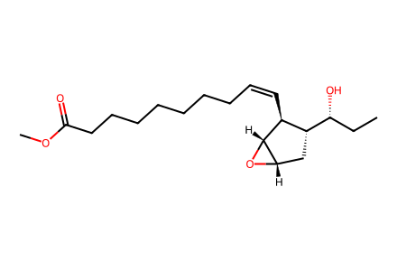
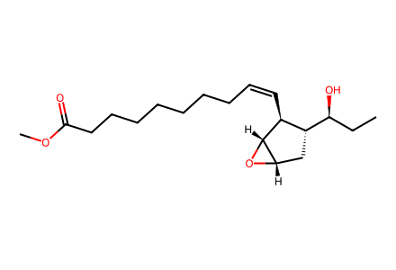
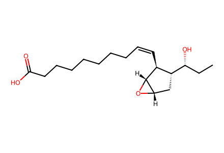
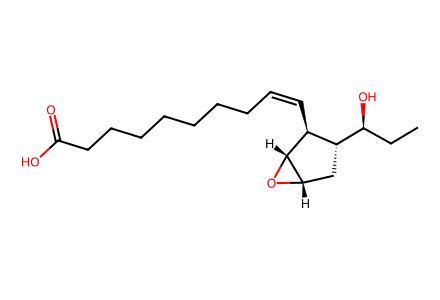
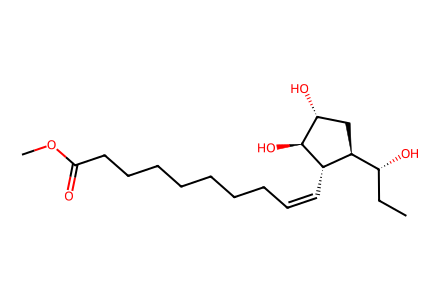
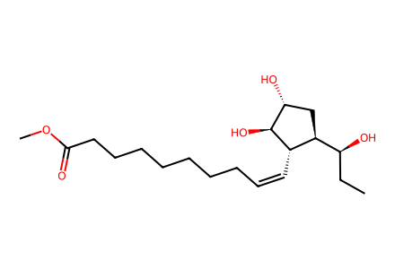
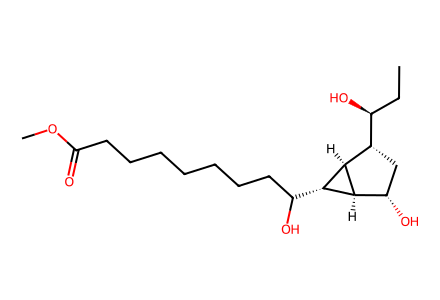
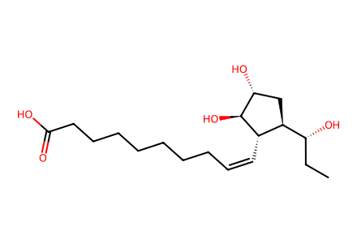
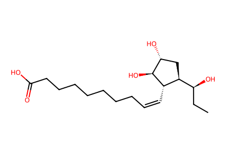

CC[C@@H](O)[C@@H]1C[C@@H]2O[C@@H]2[C@H]1/C=C\CCCCCCCC(=O)OCSix source-resolved transformations from drawn 16R/S-13 to Plasmodiophorols A/C and epimers, plus rearrangement product 16. SI pp2-3 Grignard preparations recorded as unresolved because precursor 15R-8 is named only by label and not drawn in this SI. Main article unavailable; upstream route not claimed complete. Facts compiled deterministically; independent review pending.
完整 JSON · 逐步 CSV · 路线序列 · SDF · HRMS 核对
| 事件 | 分子连接 | 报告产率 | Canonical reaction SMILES |
|---|---|---|---|
| E01 | 16R-13 → 16R-4 | 16R-4: 73% | CC[C@@H](O)[C@@H]1C[C@@H]2O[C@@H]2[C@H]1/C=C\CCCCCCCC(=O)OC>>CC[C@@H](O)[C@@H]1C[C@@H]2O[C@@H]2[C@H]1/C=C\CCCCCCCC(=O)O |
| E02 | 16S-13 → 16S-4 | 16S-4: 81% | CC[C@H](O)[C@@H]1C[C@@H]2O[C@@H]2[C@H]1/C=C\CCCCCCCC(=O)OC>>CC[C@H](O)[C@@H]1C[C@@H]2O[C@@H]2[C@H]1/C=C\CCCCCCCC(=O)O |
| E03 | 16R-13 → 16R-15 | 16R-15: 37% | CC[C@@H](O)[C@@H]1C[C@@H]2O[C@@H]2[C@H]1/C=C\CCCCCCCC(=O)OC>>CC[C@@H](O)[C@@H]1C[C@@H](O)[C@H](O)[C@H]1/C=C\CCCCCCCC(=O)OC |
| E04 | 16S-13 → 16S-15 + 16 | 55% combined mixture yield | CC[C@H](O)[C@@H]1C[C@@H]2O[C@@H]2[C@H]1/C=C\CCCCCCCC(=O)OC>>CC[C@H](O)[C@@H]1C[C@@H](O)[C@H](O)[C@H]1/C=C\CCCCCCCC(=O)OC.CC[C@H](O)[C@@H]1C[C@H](O)[C@H]2[C@H](C(O)CCCCCCCC(=O)OC)[C@@H]12 |
| E05 | 16R-15 → 16R-5 | 16R-5: 43% | CC[C@@H](O)[C@@H]1C[C@@H](O)[C@H](O)[C@H]1/C=C\CCCCCCCC(=O)OC>>CC[C@@H](O)[C@@H]1C[C@@H](O)[C@H](O)[C@H]1/C=C\CCCCCCCC(=O)O |
| E06 | 16S-15 → 16S-5 | 16S-5: 38% | CC[C@H](O)[C@@H]1C[C@@H](O)[C@H](O)[C@H]1/C=C\CCCCCCCC(=O)OC>>CC[C@H](O)[C@@H]1C[C@@H](O)[C@H](O)[C@H]1/C=C\CCCCCCCC(=O)O |

CC[C@@H](O)[C@@H]1C[C@@H]2O[C@@H]2[C@H]1/C=C\CCCCCCCC(=O)OC
CC[C@H](O)[C@@H]1C[C@@H]2O[C@@H]2[C@H]1/C=C\CCCCCCCC(=O)OC
CC[C@@H](O)[C@@H]1C[C@@H]2O[C@@H]2[C@H]1/C=C\CCCCCCCC(=O)O
CC[C@H](O)[C@@H]1C[C@@H]2O[C@@H]2[C@H]1/C=C\CCCCCCCC(=O)O
CC[C@@H](O)[C@@H]1C[C@@H](O)[C@H](O)[C@H]1/C=C\CCCCCCCC(=O)OC
CC[C@H](O)[C@@H]1C[C@@H](O)[C@H](O)[C@H]1/C=C\CCCCCCCC(=O)OC
CC[C@H](O)[C@@H]1C[C@H](O)[C@H]2[C@H](C(O)CCCCCCCC(=O)OC)[C@@H]12
CC[C@@H](O)[C@@H]1C[C@@H](O)[C@H](O)[C@H]1/C=C\CCCCCCCC(=O)O
CC[C@H](O)[C@@H]1C[C@@H](O)[C@H](O)[C@H]1/C=C\CCCCCCCC(=O)O